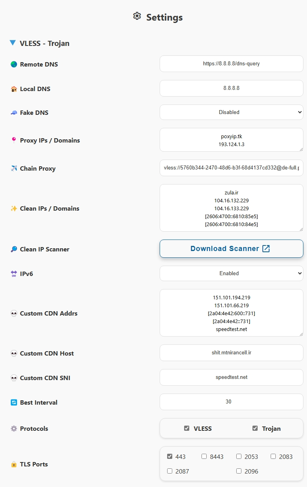

تنظیمات VLESS و Trojan
این تنظیمات فقط برای اشتراکهای Fragment و Full Normal اعمال میشن.

Remote DNS
بهصورت پیشفرض، Remote DNS از Google DNS با پروتکل HTTPS (DoH) استفاده میکنه.
هشدار
از استفاده از https://1.1.1.1/dns-query، https://cloudflare-dns.com/dns-query یا هر DNS مرتبط با Cloudflare برای Remote DNS خودداری کنید، چون پینگ رو به شدت بالا میبرن و اتصال با Workerها رو ناپایدار میکنن.
نکته
از نسخه 2.5.5 به بعد، میتونید از سرورهای معروف DoH یا DoT استفاده کنید، مثل:
Local DNS
بهصورت پیشفرض، سرور Local DNS از Google DNS استفاده میکنه.
سرورهای DNS زیادی بهصورت IP برای Local DNS در دسترسن، ولی میتونید از localhost استفاده کنید که از سرور DNS اپراتورتون استفاده میکنه و برای مسیریابی مناسبه.
Fake DNS
میتونید Fake DNS رو فعال کنید تا تأخیر DNS کمتر بشه، ولی با احتیاط — ممکنه با بعضی برنامهها سازگار نباشه یا با DNS سیستم تداخل ایجاد کنه. اگه از کارکردش مطمئن نیستید، فعالش نکنید.
Proxy IP
از نسخه 2.3.5 به بعد، میتونید Proxy IP رو از طریق پنل تغییر بدید و با اعمال تغییرات، اشتراک رو بهروزرسانی کنید. ولی توصیه میشه Proxy IP رو از طریق داشبورد Cloudflare یا ویزارد تنظیم کنید، چون:
یادداشت
تغییر Proxy IP از طریق پنل نیاز به بهروزرسانی اشتراک داره اگه IP از کار بیفته. این میتونه کانفیگهای اهدایی رو مختل کنه، چون کاربرایی که اشتراک فعال ندارن نمیتونن بهروزرسانی کنن. این روش فقط برای استفاده شخصی خوبه. روشهای دیگه نیازی به بهروزرسانی اشتراک ندارن.
یه Proxy IP از لینک زیر انتخاب کنید که IPها رو بر اساس منطقه و ISP لیست کرده:
راهنمایی
برای استفاده از چند Proxy IP، اونا رو همونطور که توی تصویر بخش نشون داده شده وارد کنید.
Chain Proxy
همونطور که گفته شد، Proxy IP باعث ثابت شدن IP برای آدرسهای هدف Cloudflare میشه، ولی IP شما برای بقیه هدفها ممکنه فرق کنه. Chain Proxy یه IP ثابت برای همه آدرسها تضمین میکنه. اینجا میتونید از یه کانفیگ رایگان VLESS، Socks یا HTTP استفاده کنید، حتی اگه توسط اپراتورتون فیلتر شده باشه، تا IPتون به IP Chain Proxy تغییر کنه.
یادداشت
کانفیگ Chain Proxy نباید خودش Worker باشه، وگرنه IP نهایی بازم تغییر میکنه.
نکته
کانفیگهای رایگان از منابعی مثل racevpn.com در دسترسن. کانفیگهای طرح رایگانشون بعد از سه روز منقضی میشن، ولی پایدارن و بر اساس منطقه تنظیم شدن.
راهنمایی
انواع کانفیگ VLESS پشتیبانیشده شامل موارد زیره:
- WS
- Reality WS
- WS TLS
- GRPC
- Reality GRPC
- GRPC TLS
- TCP
- Reality TCP
- TCP Header
- Reality TCP Header
- TCP TLS
راهنمایی
کانفیگهای Socks میتونن این فرمتها رو داشته باشن:
- socks://
address:port - socks://
user:pass@address:port
راهنمایی
کانفیگهای HTTP میتونن این فرمتها رو داشته باشن:
- http://
address:port - http://
user:pass@address:port
این تنظیم برای همه اشتراکها به جز Normal و Warp اعمال میشه. بعد از اعمال، اشتراک رو بهروزرسانی کنید.
اشتراک Normal بهصورت جداگانه Chain Proxy رو وارد میکنه. توی برنامههایی مثل Nekobox یا Husi، اشتراک رو توی بخش Group ویرایش کنید و Chain Proxy رو بهعنوان Landing Proxy تنظیم کنید تا زنجیره بشه. از نسخه 1.9.1، v2rayNG هم این قابلیت رو داره: اسم کانفیگ رو کپی کنید، اشتراک رو توی تنظیمات گروه اشتراک ویرایش کنید و توی فیلد Next proxy remarks بذارید.
هشدار
*کانفیگهای VLESS TLS برای Chain شدن باید از پورت 443 استفاده کنن.
* کانفیگهای VLESS با مقادیر ALPN randomized با Clash سازگار نیستن چون از این Fingerprint پشتیبانی نمیکنه.
* کانفیگهای VLESS WS برای زنجیره توی Sing-box به خاطر باگ هسته مناسب نیستن.
Clean IP/Domains
برای اشتراکهای غیر از Fragment، شاید بخواید از Clean IPs استفاده کنید. پنل یه اسکنر داره که بهصورت فایل زیپ برای سیستمعاملتون قابل دانلوده. CloudflareScanner رو اجرا کنید، نتایج توی result.csv ذخیره میشن و میتونید IPها رو بر اساس تأخیر و سرعت دانلود انتخاب کنید. ویندوز برای این کار توصیه میشه و حین تست مطمئن بشید VPN خاموشه. برای اسکن پیشرفته، به این راهنما مراجعه کنید.
نکته
توی اپراتورهایی که از IPv6 پشتیبانی میکنن (مثل رایتل، ایرانسل، آسیاتک)، IPv6 رو توی سیمکارتتون فعال کنید، گزینه Prefer IPv6 رو توی تنظیمات برنامه فعال کنید و از دو کانفیگ آخر یا کانفیگ پیشفرض اول استفاده کنید. IPهای v6 معمولاً عملکرد بهتری دارن.
نکته
وقتی از Fragment استفاده میکنید، Clean IPs نقش زیادی ندارن، ولی بعضی اپراتورها مثل رایتل ممکنه بازم بهشون نیاز داشته باشن.
برای اضافه کردن کانفیگهای سفارشی در کنار کانفیگهای پیشفرض، IP یا دامنههای تمیز رو همونطور که توی تصویر بخش نشون داده شده وارد کنید و روی Apply کلیک کنید. بعد از بهروزرسانی اشتراک این کانفیگهای جدید اضافه میشن و به کانفیگهای Best Ping و Best Fragment هم اضافه میشن.
فعالسازی IPv6
پنل بهصورت پیشفرض کانفیگهای IPv6 ارائه میده. اگه اپراتورتون از IPv6 پشتیبانی نمیکنه، غیرفعالش کنید تا تعداد کانفیگها کم بشه و تنظیمات DNS و مسیریابی بهینه بشن.
Custom CDN
برای اینکه از یه Custom CDN (مثل Fastly، Gcore) برای مخفی کردن دامنه Worker خودتون استفاده کنید باید سه بخش زیر رو پیکربندی کنید:
- Custom CDN Addrs: اینا IPها یا IPهای تمیز مخصوص CDN هستن. باید از IPهای خود CDN استفاده کنید، نه Cloudflare. دامنهها، آدرسهای IPv4 یا IPv6 رو همونطور که نشون داده شده وارد کنید، با آدرسهای IPv6 توی کروشه، مثلاً
[2a04:4e42:200::731]. - Custom CDN Host: هاستی که توی CDN تعریف شده و به Worker شما اشاره میکنه، مثل یه دامنه جعلی توی Fastly.
- Custom SNI: یه دامنه جعلی یا یه سایت روی همون CDN، مثلاً
speedtest.net(بدونwww) برای Fastly.
بعد از پیکربندی این قسمتها، کانفیگهای مرتبط به اشتراکهای Normal و Full Normal اضافه میشن و با علامت C مشخص میشن.
راهنمایی
فقط پورتهای 443 و 80 برای این کانفیگها پشتیبانی میشن.
هشدار
برای اشتراکهای Normal، باید بهصورت دستی Allow Insecure رو توی تنظیمات کانفیگ فعال کنید. اشتراک Full Normal اینو بهصورت خودکار اعمال میکنه.
Best Interval
بهصورت پیشفرض، کانفیگهای Best هر 30 ثانیه تست میکنن تا بهترین کانفیگ یا مقدار Fragment رو پیدا کنن. توی شبکههای کمسرعت حین کارهایی مثل تماشای ویدیو یا بازی، این ممکنه باعث لگ بشه. بازه زمانی رو بین 10 تا 90 ثانیه بر اساس نیاز تنظیم کنید.
انتخاب Protocol
یکی یا هر دو پروتکل VLESS و Trojan رو فعال کنید.
انتخاب Port
پورتهای مورد نیاز رو انتخاب کنید. پورتهای TLS کانفیگهای امنتری ارائه میدن، ولی حین اختلالات TLS یا وقتی Fragment خوب کار نمیکنه، کانفیگهای غیر TLS میتونن جایگزین خوبی باشن.
یادداشت
کانفیگهای غیر TLS نیاز دارن که پنل با روش Workers ساخته بشه. اگه از روش Pages استفاده شده باشه، پورتهای HTTP توی پنل نشون داده نمیشن.
راهنمایی
کانفیگهای غیر TLS فقط به اشتراکهای Normal و Full Normal اضافه میشن.